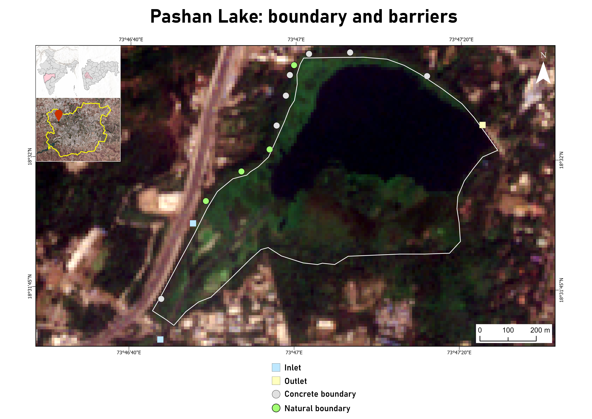

Group project
Geospatial & ecological assessment for restoration planning of Pashan Lake, Pune
Analysing decadal change in land use and land cover, surface water extent and vegetation health, alongside pollution sources and eutrophication, to support restoration. Sentinel-2, Landsat-8 and LISS-IV imagery are processed in ArcGIS Pro and Google Earth Engine to derive spectral indices and temporal trends. Field work includes vegetation sampling with line and belt transects.
Read more →